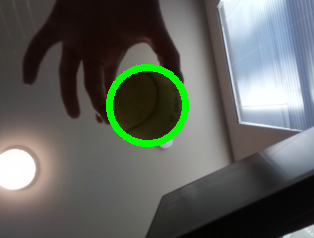
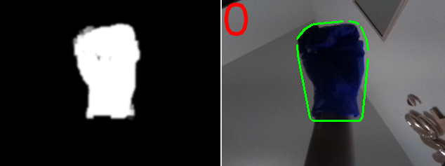
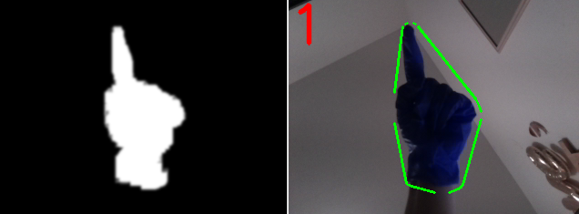
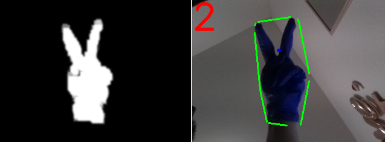
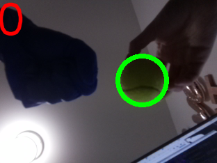
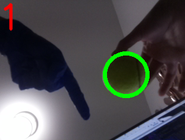
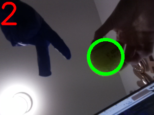
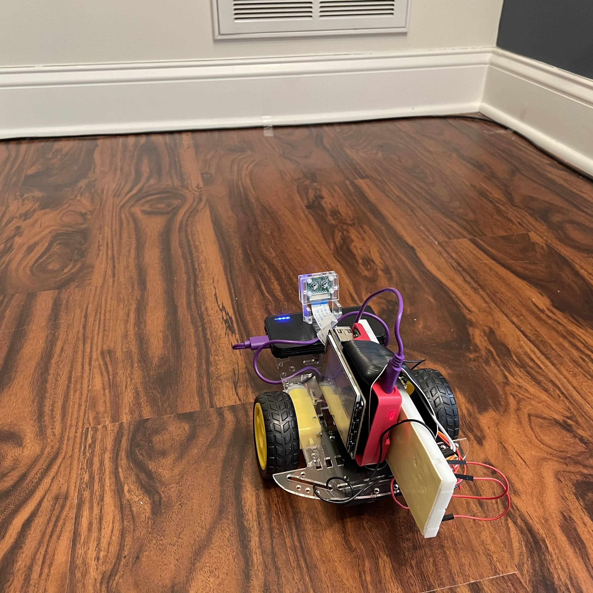
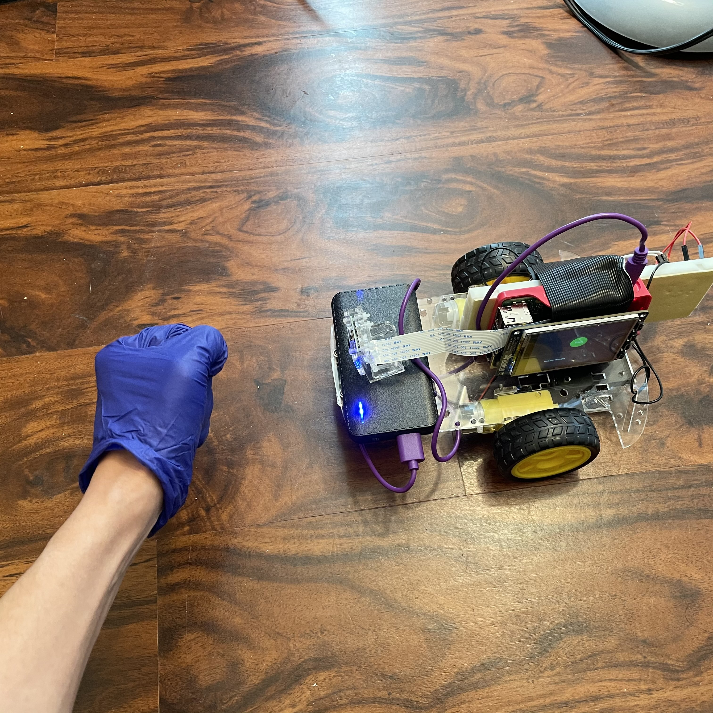
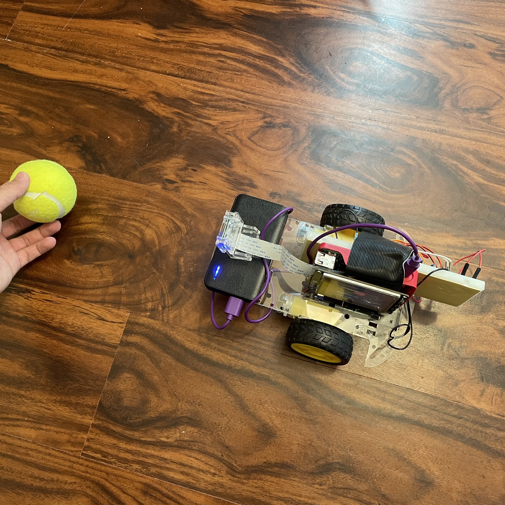

Touchless Music Player
ECE 5725 Project
Tamzid Ahmed (ta326) and Claire Caplan (crc235)
05/19/2021
Demonstration Video
Objective
Test
Design
A picture of the design

In the section below, we will have a more in-depth discussion on how each subsystem is designed.
Ball tracking system:
Hand gesture detection:
Similar to the ball tracking system, this subsystem will also utilize the OpenCV library. Our goal will be to detect for the hand and to detect on the number of lifted fingers, which would represent the intended digits. We will be calculating the contour and Convex Hull of the hand, and then to calculate the number of defects. The defects would show the gaps between the fingers, which would tell us on how many fingers are lifted. This method is inspired by the ECE 5725 Air Painter project and this hand gesture project
Testings
Ball tracking system:

Hand gesture detection:
if defects_most == 0:
# If hull is 10% bigger than contour => finger 1
if (area_hull-area_cnt)/(area_cnt) > .15:
finger = 1
else:
finger = 0 


Left image shows the thresholded HSV image of the fingers and right images shows the image feed of the finger along with the predicted finger digit.
  
Motor Control:
After verifying the performance of the ball detection function and the hand detection function. The detection program was integrated and tested with the motor control. Tests showed that the performance of the robot was largely affected by the exposure. The camera will automatically adjust its video feed brightness based on the current exposure, which affects the color detection of the robot and hand. Additionally, we found that the ball and hand gesture detection did not perform well if the robot is facing a crowded background.
When the robot was moving, it was hard to keep a constant background and light exposure as the robot is moving around a room. As a result, the robot would not be able to detect the ball or hand gesture well. With all these constrains, we have decided to test the robot in a closed space. The robot will always be facing a single direction towards a plain white wall. Additionally, testing in this closed space helps keep a constant light exposure.
  Several images describing how our robot system was tested.
During the ball tracking mode test, the robot initial position is to face the plain wall. Hand gestures were then presented to control the robot moving forward, backward and stop. Then, hand gesture of showing “1” would be presented to the robot to ball tracking mode. To test the ball tracking function, a tennis ball was placed in front of the robot and moved in a zigzag pattern. In this way, the ball tracking function could be tested while maintaining a consistent background for the camera.
During the initial testings, the tracking movement is not smooth and the ball is not tracked well. As a result, we needed to tweak the kp and kd values in order to make the tracking smoother. This involves a lot of trials and errors, but in the end we are able to find the right values that would track the ball well. We have also added a constant duty cycle value into the equation, which allows us to set the minimum duty cycle of the motor. This is because we have learned that the motor will only move above the duty cycle of 40 in order for the motor to overcome the wheel's friction to the ground. Additionally, we have also tested on how well the robot is finding a new ball after it has lost it. We have noticed that there are cases where we would receive false positives of detected ball from a crowded background. As a result, we determined that the detected object is a ball only if it is still there after some time (or some captured frames). A code snippet from the main loop is included below to describe the process:
# If ball was previously not detected
if ball_detected == 0 and ball_verify == 0:
ball_first_detected = time.time()
ball_verify = 1
if ball_verify == 1 and (time.time() - ball_first_detected) > 0.1: # Verification after .1 second passes, ball still detected
ball_detected = 1
ball_verify = 0User Interface:
This is the subsystem with the most straightforward testing. We tested on how the buttons will correctly transition between modes. Additionally, during the "Ball-Tracking" mode, we made sure that the ball distance will be displayed correctly. Below are the images showing the PiTFT display during "Stop" and "Ball-Tracking" mode. Notice how the display on the "Ball-Tracking" mode will display the current ball distance.
The left image shows the display during the "Stop" mode. The right image shows the display during the "Ball-Tracking" mode.
Results
Future Works
Based on the discussion in the Results section, there are some improvements that may be done. In the current design, the functions are achieved within a single program. Because the computer vision requires a relatively large amount of processing power, the speed of the program is limited by the performance of a single core on Raspberry Pi. This resulted a noticeable latency when detecting the ball. The latency significantly affected the performance of the robot and can cause the robot losing the ball or hitting into the ball when the robot is moving relatively fast. Our future work will include using multiprocessing to separate the camera functions and the control programs to process in different threads. This will help us utilize the multicore processing power of Pi to increase the speed of the program thus improve the performance of our robot.
Another future improvement could be using better motors. In the current design, the performance of the motor is not very consistent. The left and right motor tend to have different speed under the same duty cycle and stall at different duty cycle. This caused a problem when implementing the motor control. A more precise motor will improve the performance significantly. The power supply can also be improved in the future design. The power bank used in current design cannot provide enough power for the Raspberry Pi. This lowers the clock frequency of the Pi and slows down the program. Our future work will be looking for a mobile power supply which could provide a stable 5V3A output to power the Pi.
Finally, we mentioned in the Results section that our detection algorithm are having trouble when facing a crowded background. There may some improvements that can be done here, perhaps on performing a continuous background subtraction on every several frames. This would allow the robot to be more robust and to work without needing a constantly plain background.
Conclusion
The main goal of the robot is to be able to track and follow a tennis ball, where in the scope of this prototype the ball represents a human. We also wanted to allow the user to control the robot using their hand gestures. Additionally, the robot should provide a user interaction by displaying information or buttons through the touchscreen display. The robot is able to perform the above goals well, as shown in the demo video. However, we have discovered several limitations of the robot, such as its sensitivity to exposure changes and crowded backgrounds. These are issues that may be fixed through future works. With the success that was achieved in this first prototype, we are one step closer to making a human-tracking ground robot.
Parts List
- Raspberry Pi 4 $35.00
- Adafruit PiTFT $35.00
- Raspberry Pi Camera Module V2 $25.00
- Robot base with DC motors $25.00
- LEDs, Resistors and Wires - Provided during the course
Total: $95.00
Work Distribution
Jonathan Nusantara
jan265@cornell.edu
ECE MEng '20
Jiaxuan Su
js3596@cornell.edu
ECE MEng '20
References
PiCamera DocumentPigpio Library
R-Pi GPIO Document
Hand gesture computer vision tutorial
ECE 5725 Air Painter project
ECE 5725 Tracking Robotic Car project